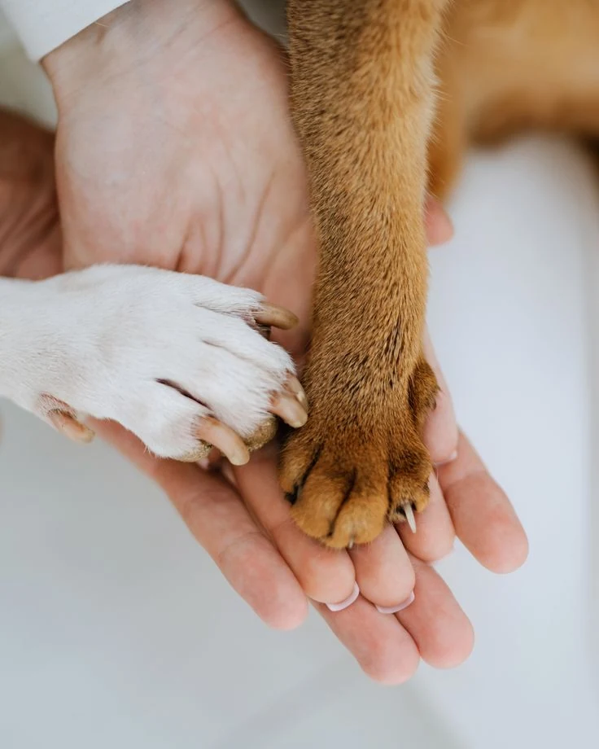

“Toby llegó con miedo a todo. Hoy es el primero en recibirnos en la puerta. La fundación nos acompañó en cada paso, incluso después de la adopción.”
Rescatamos animales en situación de calle o maltrato, les brindamos atención veterinaria, rehabilitación con amor y encontramos hogares definitivos que los valoren para siempre.


En Fundación Huellitas creemos que la tecnología puede salvar vidas. Por eso creamos una plataforma digital que da visibilidad a los animales que más lo necesitan y conecta a quienes quieren ayudar: personas que reportan un caso, familias que desean adoptar, donantes, voluntarios y aliados.
Desde cualquier celular o computador puedes conocer a nuestros animales, reportar un caso de maltrato o abandono y sumarte a la red. Así, cada huella deja de ser invisible.
Publicamos los animales en adopción y los casos de rescate para que lleguen a más personas.
Reportes, adopciones, donaciones y voluntariado en un solo lugar, a pocos clics.
Una base de datos registra cada animal, reporte y adopción para hacer seguimiento y no perder ningún caso.
Cada uno tiene una historia. Conoce a quienes esperan un hogar, a quienes se recuperan con nuestro equipo y a los que su familia está buscando.
Desliza para ver más
Nos aseguramos de que cada animalito llegue al hogar ideal, seguro y definitivo.
Revisa nuestro mural de rescatados, lee su temperamento e historia y escoge el que mejor combine contigo.
Cuéntanos sobre tu vivienda, rutina diaria, personas con las que convives y tu experiencia con mascotas.
Conversaremos contigo para despejar inquietudes, explicar cuidados veterinarios y pactar visita de compatibilidad.
Formalizamos el acta de adopción y entregamos a tu nuevo amigo con acompañamiento veterinario permanente.
Cada adopción es una vida que cambia, la del animal y la de su nueva familia.
“Toby llegó con miedo a todo. Hoy es el primero en recibirnos en la puerta. La fundación nos acompañó en cada paso, incluso después de la adopción.”

“Teníamos dudas de que Nala se llevara bien con nuestro perro. Nos asesoraron en la visita de compatibilidad y ahora son inseparables.”

“Canela fue rescatada de la calle con una pata lastimada. Verla correr hoy en la finca no tiene precio. Adoptar fue la mejor decisión.”
Desliza para ver más
No contamos con financiamiento estatal fijo. Alimentamos, operamos y sanamos gracias a aportes solidarios como el tuyo.
Alimento balanceado para un perro rescatado durante 2 semanas.
Vacunas completas, desparasitación y microchip para un rescatado.
Esterilización o cirugía de un animal rescatado de la calle.
Te enviamos los datos de pago por WhatsApp. ¿Prefieres ayudar de otra forma? Conoce el voluntariado y las donaciones en especie
El tiempo es crítico. Publica el caso inmediatamente para que nuestra red de voluntarios y clínicas aliadas inicien la búsqueda y auxilio.